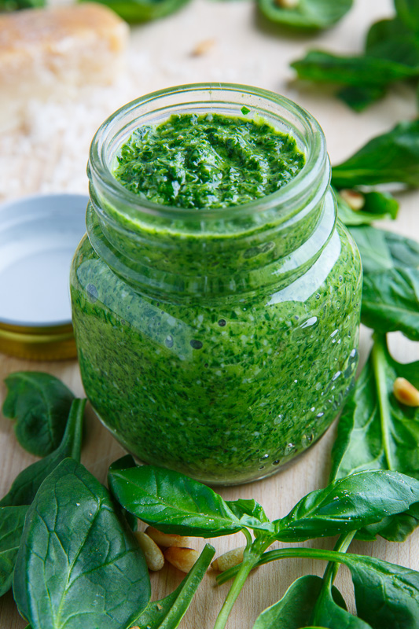

Spinach Pesto Recipe

Ingredients:
- 2 cups fresh spinach leaves, packed
- 1 cup fresh basil leaves
- 1/2 cup freshly grated Parmesan-Reggiano cheese
- 1/2 cup extra virgin olive oil
- 1/3 cup pine nuts or walnuts
- 2 medium sized garlic cloves, minced
- Salt and freshly ground black pepper to taste
Instructions:
- Combine spinach leaves, pine nuts, minced garlic, and grated cheese in a food processor or blender. Pulse a few times to chop the ingredients.
- With the machine running, slowly pour the olive oil into the processor. Continue to blend until the pesto reaches a smooth consistency.
- Add salt and pepper to taste and pulse a few more times to mix well.
- Store pesto in a tightly sealed container in the refrigerator for up to one week or freeze for longer storage.
- Use as a pasta sauce, sandwich spread, or a dip. Enjoy!